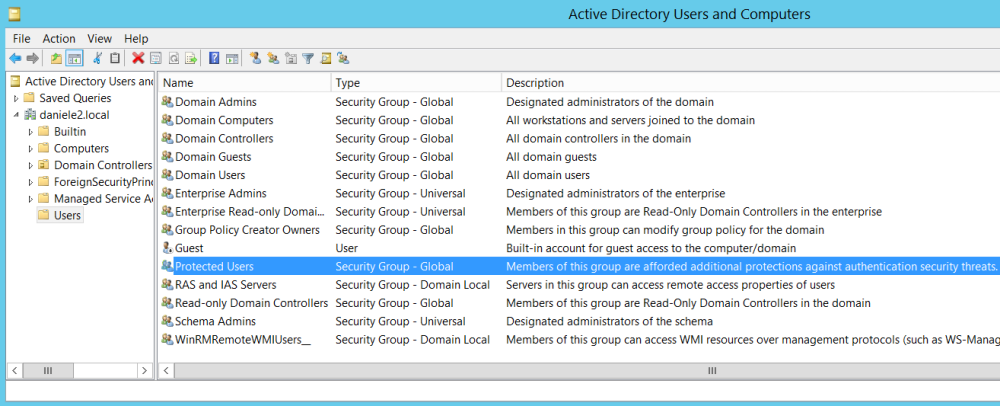

Protected Users Group
Protected Users group in Active Directory gives its members
additional security features and protection. Because of that Privileged domain users should be placed in the
Protected Users group.
Windows 8.1 and Windows Server 2012 R2 have “Protected Users group” option by default.
Microsoft Security
Advisory 2871997 adds support to Windows 7, Windows Server 2008 R2 and Windows Server
2012
Security precautions for Users of the Protected Users group• Credential
delegation(CredSSP) disabled
◇ plaintext credentials are NOT cached even when the
Allow delegating default credentials policy is enabled
• Windows
Digest will not cache the user's:
◇ plaintext credentials even when Windows Digest is enabled
• NTLM
will not cache the user's:
◇ plaintext credentials
◇ NT one-way function (NTOWF)
• It is not
possible authenticate by using NTLM
• Kerberos
◇ will no longer create DES or RC4 keys for these
Protected Users
◇ Ticket-Granting Ticket (TGT) is acquired at logon and cannot be re-acquired
automatically.
• Sign-on offline disabled:
◇ this mean the Credentials are not cached
locally
How add user to Protected Users groupServer Manager → Tools → Active
Directory Users and Computers → Users → Protected Users → Properties(right click) → Members → Add
Bibliography:•
https://docs.microsoft.com/en-us/windows-server/security/credentials-protection-and-management/protected-users-security-group•
https://docs.microsoft.com/en-us/windows-server/identity/ad-ds/manage/how-to-configure-protected-accounts